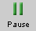
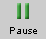

There are four basic control buttons. They are, from left to right:
-
 / Play/Pause. Clicking starts the
motion.
/ Play/Pause. Clicking starts the
motion.
After Play has been clicked, the button will change into the Pause button .
Click it if you want to take a 'snapshot' of the motion at a given instant. To resume the motion, click Play once more.
-
 Step. Lets you step through the motion in equal
time steps.
Step. Lets you step through the motion in equal
time steps.
-
 Rewind. Resets the simulation to the starting
point with the previously chosen system parameters.
After clicking Rewind, click Play to restart the
motion.
Rewind. Resets the simulation to the starting
point with the previously chosen system parameters.
After clicking Rewind, click Play to restart the
motion.
-
 Reset. Resets the applet to its default setting.
Reset. Resets the applet to its default setting.
Adjustments in the stars' positions and velocities can only be made after first clicking REWIND or RESET.


The Trace toggle button displays/hides the parts of the orbits travelled by the two stars.
The traces are not erased when you Rewind the applet. That way you can compare traces corresponding to different initial conditions.

Selecting the Vectors toggle button displays the vector panel illustrated above. By checking any of the three checkboxes in the panel, the corresponding vectors can be displayed. In the example above, the stars' velocities and the gravitational forces the stars are exerting on each other are checked. These vectors are shown in magenta and green, respectively, in the image below.
The following vectors can be displayed:
-
Velocities: velocity vectors of the two stars;
color: magenta.
Upon REWIND or RESET, the velocities can be adjusted by clicking on the tip of the velocity vector of either star and dragging. Observe how the mouse cursor changes to a cross-hair cursor when near the tip of a velocity vector. At this time, the tip can be dragged.
When one velocity vector is adjusted, the other one is adjusted by the applet automatically so that the total momentum of the system remains zero. This way, the center of mass of the system remains at rest during the motion.
-
Momenta: momentum vectors of the two stars;
color: blue.
The momentum vectors cannot be adjusted directly. They can be adjusted indirectly by adjusting the velocity vectors. See above.
-
Gravitational Forces: the gravitational forces
the stars exert on each other; color: green.
The gravitational force vectors are determined by the stars' positions and cannot be adjusted directly. Adjusting the stars' positions does have an effect on the gravitational force vectors. See Point 5 below.
On the left-hand side of the applet window, a column is displayed showing the potential energy (blue) and kinetic energy (red) of the binary star system.
An energy scale in unspecified units is placed next to the energy column. The corresponding values of the kinetic energy, KE, and potential energy, PE, are shown at the bottom left of the window. By projecting the top level of the blue potential energy bar onto the scale, you can read the value of the potential energy on the scale.
If you move the mouse cursor onto the scale, the cursor changes into a pointing hand. At this time, you can click on the scale and drag it either upward or downward. The effect is to change the potential energy by an additive constant.
The horizontal grey line indicated by the label
"PE at d =  " indicates the position of the
top of the potential energy bar when the two stars are
infinitely far apart. It is customary to define the
potential energy to be zero when the stars are infinitely
far apart, and this is done in the applet's default
setting and is the case in the image above.
" indicates the position of the
top of the potential energy bar when the two stars are
infinitely far apart. It is customary to define the
potential energy to be zero when the stars are infinitely
far apart, and this is done in the applet's default
setting and is the case in the image above.
The kinetic and potential energies shown are the totals for the two-star system. The kinetic energy shown is the sum of the individual kinetic energies of the stars. (The individual kinetic energies are not displayed.) In contrast to the kinetic energy, the potential energy cannot be written as a sum of potential energies belonging to either star alone.
By clicking on either star and dragging, you can adjust the initial positions of the stars.
This way, you can observe the changes in the potential energy of the system corresponding to changes in the star's positions and, if you display the force vectors, the changes in the gravitational forces the stars exert on each other.
The center of mass of the binary star system is indicated by a small red circle labeled "cm". You can observe the changes in the position of the center of mass accompanying changes in the stars' positions.
The Ruler can be used to measure distances between points or lengths of vector arrows in any direction: horizontal or on a slant.
To move the Ruler without changing it, click on it near the middle and drag. To move one of the endpoints of the Ruler and thereby change the Ruler's length or orientation, click on the endpoint and drag. The distance between the Ruler's endpoints is displayed in unspecified units.